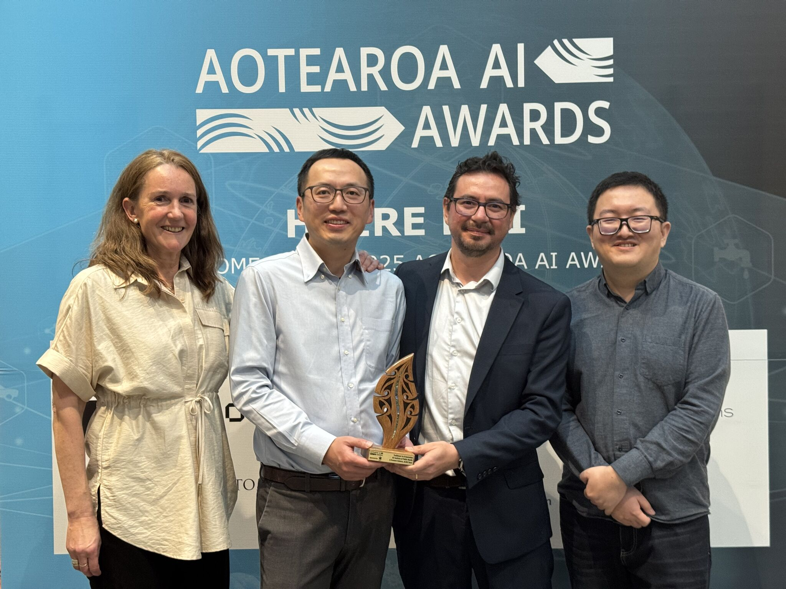

We're thrilled to share that Digital Twin ALMA has been recognised as a Trailblazer in AI Innovation at the AI Aotearoa Awards!

This award is a testament to the grit, creativity, and collaboration of our incredible team. Building a production-grade digital twin platform for public health decision-making is no small feat — it requires deep integration of causal inference, real-time data streams, and simulation modelling, all packaged into a system that domain experts can actually use.
ALMA (Advanced Learning and Modelling Architecture) represents a new paradigm in how we approach complex system interventions. Rather than relying on static predictive models, ALMA enables stakeholders to ask "what if?" — simulating the downstream effects of policy changes, resource allocation, or environmental shifts before committing to real-world action.
Being named a Trailblazer in AI Innovation alongside other outstanding teams across Aotearoa New Zealand is deeply humbling. It reflects the growing recognition that AI's greatest impact isn't in replacing human judgment, but in augmenting it — providing decision-makers with robust, evidence-based foresight.
Huge congratulations to every member of the team who contributed to this milestone. This award belongs to all of you.